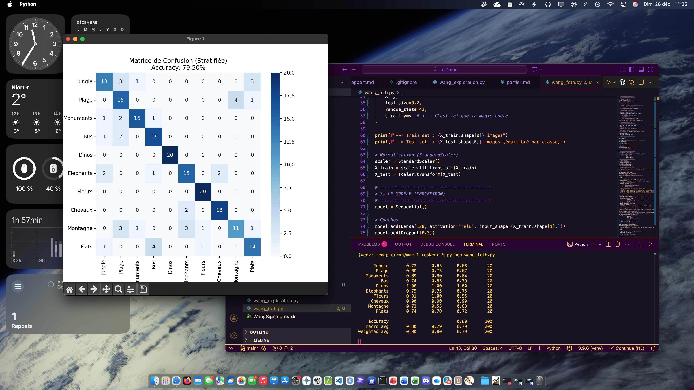
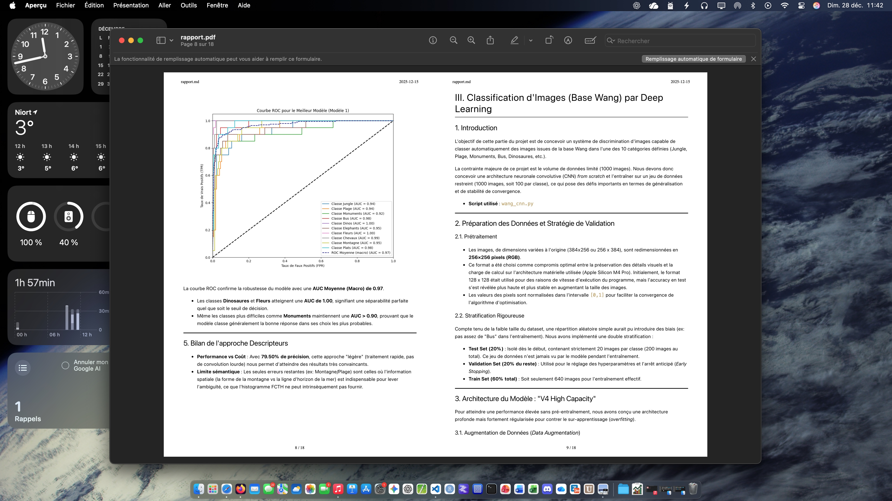

L'objectif principal de ce projet était de développer un programme capable de classer des images en utilisant des réseaux de neurones convolutifs (CNN). J'ai utilisé la bibliothèque TensorFlow pour construire, entraîner et évaluer mon modèle de classification d'images. Le but était de comprendre les concepts fondamentaux des CNN et d'appliquer ces connaissances pour résoudre un problème réel de vision par ordinateur. J'ai dû utiliser deux types de données différentes : des images et des descripteurs stockés dans un fichier XLS.
J'ai rencontré des défis liés à l'optimisation des hyperparamètres du modèle, tels que le taux d'apprentissage, le nombre d'époques et la taille du lot. La base de données était petite et il a fallu mettre en place des techniques d'augmentation de données pour améliorer la performance du modèle. De plus, j'ai dû m'assurer que le modèle ne surapprenait pas les données d'entraînement, ce qui m'a conduit à utiliser des techniques de régularisation telles que l'early stopping.

Au delà de mes compétences en Python, j'ai acquis une solide compréhension des réseaux de neurones convolutifs et de leur application à la classification d'images. J'ai appris à utiliser TensorFlow pour construire et entraîner des modèles de deep learning, ainsi qu'à évaluer leur performance à l'aide de métriques appropriées. J'ai également développé des compétences en prétraitement des données, en optimisation des hyperparamètres et en techniques de régularisation pour améliorer la généralisation du modèle.